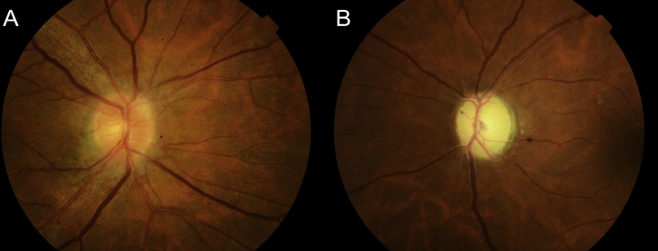
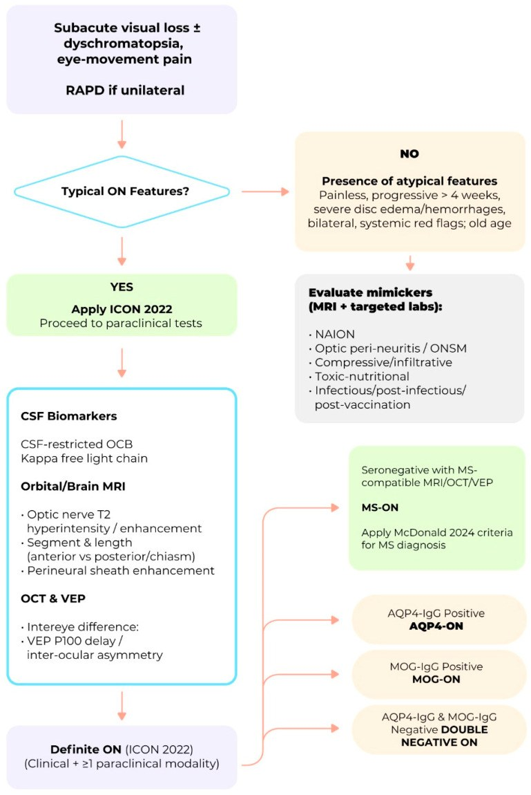
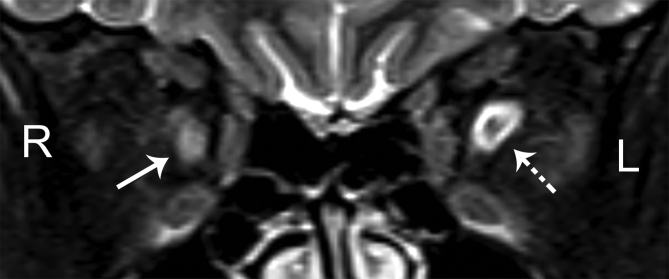
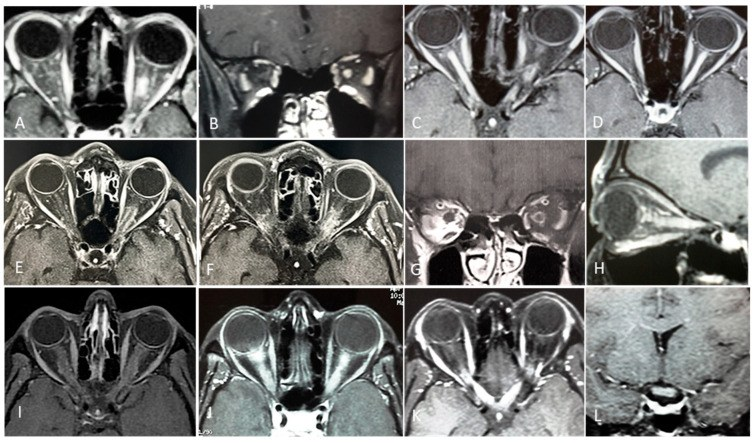

464 — Viêm thần kinh thị tái phát (CRION) & thể “âm tính kép”: phụ thuộc steroid, loại trừ AQP4/MOG / Chronic relapsing inflammatory optic neuropathy (CRION) & double-negative optic neuritis
Tags: pattern:viem-TK-thi pattern:tai-phat pattern:phu-dia-thi vung:than-kinh-thi score:OCT-GCL protocol:MRI-hoc-mat protocol:OCT-thi-truong
Mức chắc chắn (certainty): tổng hợp y văn (literature synthesis) — số liệu từ review 2026 (PMC12938181), cohort CRION/MOG (PMC6208174), OCT so sánh (PMC9497092) và cohort double-negative (PMC11514904); ca lâm sàng trong quiz là ca nguyên văn (verbatim case) của Raimundo M et al. (PMC6031225), giữ đúng tuổi – mắt – diễn tiến.
1. Tổng quan bệnh học – cơ chế hình ảnh (TẠI SAO)
- CRION (chronic relapsing inflammatory optic neuropathy) là thể viêm thần kinh thị (optic neuritis, ON) tái phát, đau, đáp ứng corticosteroid nhưng tái phát khi giảm/ngừng steroid. Bệnh thường gặp ở 30–50 tuổi, đau trước hoặc cùng lúc với mất thị lực, mức mất thị lực nặng hơn ON trong MS (Eslami M et al., Brain Sci 2022, PMC9497092).
- 5 tiêu chuẩn chẩn đoán CRION (Petzold 2014, cập nhật trong review 2026):
- Có ≥ 1 cơn ON và ≥ 1 lần tái phát;
- Bằng chứng khách quan mất chức năng thị giác (thị lực, thị trường, VEP);
- AQP4-IgG âm;
- Ngấm thuốc của thần kinh thị viêm trên MRI hốc mắt;
- Đáp ứng với điều trị ức chế miễn dịch và tái phát khi ngừng/giảm liều (Lana-Peixoto MA et al., Biomedicines 2026, PMC12938181).
- CRION không còn là “vô căn”: trong cohort Seoul, 11/12 (92%) bệnh nhân đủ tiêu chuẩn CRION dương tính MOG-IgG; tỷ lệ này là 0% ở RION và 29% ở ON đơn pha (Lee HJ et al., J Neuroinflammation 2018, PMC6208174). Vì vậy CRION phần lớn là một biểu hiện của phổ MOGAD, nhưng vẫn có nhóm âm tính kép (double-negative) thật sự.
- TẠI SAO MRI thấy ngấm thuốc: viêm làm hở hàng rào máu-mô → gadolinium rò vào mô kẽ; gadolinium rút ngắn T1 → tăng tín hiệu trên T1 fat-sat sau tiêm. Phù viêm làm T2 tăng tín hiệu; tổn thương thường dài ≥ 1/2 chiều dài thần kinh thị (longitudinally extensive), khác ổ ngắn của MS-ON.
- TẠI SAO OCT thấy mỏng: sau mỗi cơn, sợi trục tổn thương thoái hóa → pRNFL mỏng; tế bào hạch võng mạc (GCL) mất sớm hơn và phản ánh mất sợi trục ngược dòng. Trong CRION, pRNFL trung bình chỉ 39,33 ± 1,8 µm, mỏng hơn rõ so với NMOSD 81,67 µm, RRMS+ON 86,4 µm và người khỏe 92,0 µm (PMC9497092).
- Ngưỡng định lượng nằm lòng:
- Số cơn tái phát trung vị 3–6, khoảng cách giữa các cơn 4–6 tháng (PMC12938181).
- Thị lực cuối trung bình 20/33; tới 40% mắt còn di chứng dù đáp ứng steroid ban đầu (PMC12938181).
- Trong cohort double-negative IDD (98 BN, 20,4% khởi đầu bằng ON): 47,5% đơn pha trong trung vị 39,5 tháng; duy trì miễn dịch làm giảm tái phát HR 0,361 (0,150–0,869); kháng thể anti-astrocyte HR 2,243 và ≥ 4 tổn thương não lúc đầu HR 2,494 là yếu tố nguy cơ (Jiang F et al., Ann Clin Transl Neurol 2024, PMC11514904).
- CRION chiếm ~6% các ca ON tái phát; double-negative RON chiếm 41% trong một cohort chuyên khoa (PMC12938181).
2. Mẫu hình + chẩn đoán phân biệt theo bối cảnh (Gamut)
- Theo tuổi – mức đau – đáp ứng steroid:
- Trẻ/nữ, đau nhiều, tái phát khi giảm steroid, MRI dài ≥ 1/2 thần kinh thị: CRION/MOG-ON.
- Nữ trung niên, đau, tổn thương dài, bệnh nặng, có area postrema/chiasmal: AQP4-ON (NMOSD).
- Nữ trẻ, đau nhẹ, ổ ngắn < 1/2 thần kinh thị, OCB (+), tổn thương não quanh não thất: MS-ON.
- > 50 tuổi, không đau, mất thị trường trên/dưới (altitudinal), đĩa phù, yếu tố mạch máu: NAION.
- Đau tăng khi liếc, đĩa phù, song phương, hồi phục tốt nhưng tái phát: MOG-ON.
- Không đau, tiến triển chậm, teo đĩa, tiền sử độc chất/thuốc: ON do độc/chuyển hóa; LHON (nam trẻ, mất thị lực trung tâm hai mắt cách nhau vài tuần–tháng).
- Bất thường toàn thân: sarcoid (tuyến lệch to, hạch rốn phổi), lupus/Sjögren, giang mai, HIV, bệnh Behçet.
- Theo hình thái tổn thương trên MRI:
- Dài + ngấm toàn bộ + màng nuôi thần kinh: CRION/MOG.
- Dài + dày + ngấm mạnh, có thể chiasm: AQP4.
- Ngắn, ổ khu trú, một bên: MS.
- Không ngấm, đĩa phù, không tổn thương thần kinh thị: NAION (thường không có ngấm thần kinh thị; ngấm mỡ quanh thần kinh có thể gặp).
- Mnemonic “STEROID”: Severe pain · Tái phát khi giảm liều · Enhancement dài · Response nhanh với steroid · Optic disc phù/pallor · IgG AQP4 âm · Double-negative phải theo dõi.
3. Bảng so sánh phân biệt (ma trận đối chiếu)
| Thực thể (entity) | Hình ảnh điển hình | Chốt vào (rule-in) | Chốt loại (rule-out) | Gợi ý xác nhận |
|---|---|---|---|---|
| CRION | MRI: ngấm thuốc dài ≥ 1/2 thần kinh thị, có thể hai bên; brain MRI thường bình thường; OCT pRNFL 39,33 µm | ON tái phát + đau + đáp ứng steroid + tái phát khi giảm liều + AQP4 âm | Không tái phát khi ngừng steroid / có tổn thương não đặc hiệu MS → không CRION | AQP4/MOG-IgG (CBA), MRI hốc mắt trước điều trị, OCT, thị trường |
| MOG-ON | Hai bên, dài, ngấm màng nuôi thần kinh (perineural), đĩa phù; hồi phục tốt nhưng tái phát | MOG-IgG (+) + đĩa phù + tổn thương dài/perineural | MOG-IgG âm + ổ ngắn + OCB (+) → MS-ON | MOG-IgG CBA; MRI hốc mắt + não; OCT |
| AQP4-ON (NMOSD) | Dài, dày, ngấm mạnh, chiasm/area postrema; thị lực nặng, hồi phục kém | AQP4-IgG (+) + tổn thương dài/chiasm + area postrema | AQP4 âm + ổ ngắn + OCB (+) → MS | AQP4-IgG CBA; MRI não/tủy; OCT |
| MS-ON | Ổ ngắn < 1/2 thần kinh thị, một bên, ngấm khu trú; tổn thương não quanh não thất | OCB (+) + ổ ngắn + tổn thương não đặc hiệu MS | Tổn thương dài + không OCB + brain MRI bình thường → không MS | MRI não + tủy, OCB, MOG/AQP4 |
| Double-negative ON/RION | MRI dài hoặc ngắn, AQP4 và MOG đều âm; không tổn thương não đặc hiệu | ON tái phát + AQP4/MOG âm + loại trừ MS/NMOSD/MOGAD | Có AQP4/MOG (+) hoặc tiêu chuẩn MS → xếp nhóm khác | CBA lặp lại; MRI theo dõi; duy trì miễn dịch nếu tái phát |
| NAION | Đĩa phù lan tỏa, không ngấm thần kinh thị; thị trường altitudinal; mạch máu nhỏ | > 50 tuổi, không đau, altitudinal, đĩa phù, yếu tố mạch máu | Đau khi liếc + ngấm thần kinh thị + trẻ → không NAION | Soi đáy mắt, thị trường, MRI loại trừ, CRP/ESR nếu nghi GCA |
| ON do độc/chuyển hóa & LHON | Thần kinh thị không ngấm, teo đĩa hai bên; LHON có phù đĩa giả | Tiền sử thuốc/rượu/B12 thấp; LHON: nam trẻ, mất thị lực trung tâm hai mắt | Ngấm thuốc mạnh + đau + tái phát khi giảm steroid → viêm | B12, folate, thuốc, DNA ty thể (LHON), OCT |

Soi đáy mắt cùng một bệnh nhân: (A) mắt phải đang tái phát — phù đĩa thị lan tỏa, bờ mờ, sung huyết; (B) mắt trái — teo đĩa thị, bờ rõ, nhợt sau các cơn trước. Sự tương phản “phù đang hoạt động vs teo sau cơn” là chìa khóa của bệnh tái phát. Nguồn: Raimundo M et al., Am J Ophthalmol Case Rep 2018 (PMC6031225), Fig. 2, CC BY-NC-ND 4.0 — ảnh giữ nguyên bản.4. Protocol chụp + hệ phân độ/điểm chuẩn hóa
- MRI hốc mắt + não (bắt buộc trước khi dùng steroid):
- T1 fat-sat sau gadolinium (lát 1–2 mm qua thần kinh thị, coronal + axial) — tìm ngấm thuốc dài, màng nuôi, chiasm.
- T2 fat-sat — phù/tăng tín hiệu; DWI nếu cần loại nhồi máu/u.
- Brain MRI — tìm tổn thương quanh não thất/OCB (MS), area postrema (AQP4), tổn thương thân não.
- Xét nghiệm: AQP4-IgG và MOG-IgG bằng cell-based assay (CBA) — bắt buộc với mọi ON tái phát/hai bên; OCB trong DNT; ACE, lysozyme, chest CT nếu nghi sarcoid; B12, folate, TSH, RPR/HIV; ANA, anti-SSA/SSB.
- OCT: pRNFL + GCL/IPL (theo dõi mất sợi trục); đo lúc chẩn đoán và mỗi 3–6 tháng; pRNFL có thể bình thường sớm vì phù che lấp, mỏng dần sau 3–6 tháng.
- Thị trường Humphrey 24-2 + VEP — bằng chứng khách quan và theo dõi.
- Điều trị:
- Cơn cấp: methylprednisolone IV 1 g/ngày × 3–5 ngày, sau đó prednisone uống giảm liều chậm (tháng, không ngày).
- Duy trì: azathioprine, mycophenolate, rituximab, IVIG (CRION/MOG); không ngừng đột ngột vì tái phát trong vài tuần–vài tháng.
- MOG-IgG (+): đáp ứng steroid tốt nhưng hay phụ thuộc; cân nhắc IVIG và tránh giảm liều nhanh.
- Double-negative tái phát: duy trì ức chế miễn dịch (HR 0,361); theo dõi chuyển sang MS/NMOSD/MOGAD.
flowchart TD
A[ON tái phát / hai bên / phụ thuộc steroid] --> B[AQP4-IgG & MOG-IgG bằng CBA]
B -->|AQP4+| C[NMOSD: duy trì ức chế miễn dịch]
B -->|MOG+| D[MOGAD: steroid chậm + IVIG/rituximab]
B -->|âm cả hai| E{Tiêu chuẩn MS? OCB, MRI não}
E -->|Có| F[MS-ON: DMT]
E -->|Không| G{Đủ 5 tiêu chuẩn CRION?}
G -->|Có| H[CRION: steroid dài hạn + thuốc tiết kiệm steroid]
G -->|Không| I[Double-negative ON: theo dõi + điều trị nếu tái phát]

Sơ đồ gốc: phân nhánh theo RAPD, hình ảnh MRI, AQP4/MOG, OCB và đáp ứng điều trị — dùng để định vị CRION trong phổ ON. Nguồn: Lana-Peixoto MA et al., Biomedicines 2026 (PMC12938181), Fig. 5, CC BY 4.0.5. Biến thể bình thường và cạm bẫy
- Corticosteroid gây bệnh võng mạc trung tâm thanh dịch (CSCR): bệnh nhân CRION đang dùng steroid có thể mất thị lực không đau do bong thanh dịch hoàng điểm — không phải tái phát ON. Ca nguyên văn: nữ 42 tuổi, CRION mắt trái, đợt cấp mắt phải, 2 tháng sau mất thị lực không đau do CSCR, tự hồi phục sau 4 tháng dù tiếp tục steroid (PMC6031225). OCT hoàng điểm là chốt.
- Đáp ứng steroid không đặc hiệu: NAION, u chèn ép, bệnh lý mạch máu cũng có thể “đỡ” thoáng qua; không được dùng đáp ứng steroid để chốt CRION.
- MRI sau steroid có thể hết ngấm: chụp trước khi truyền methylprednisolone nếu có thể; nếu đã điều trị, đừng loại trừ CRION chỉ vì MRI âm.
- MOG dương không đồng nghĩa CRION: MOGAD có tiêu chuẩn riêng; CRION là kiểu hình lâm sàng, không phải chẩn đoán song song.
- Double-negative không phải “không bệnh”: vẫn tái phát; duy trì miễn dịch giảm tái phát (HR 0,361); theo dõi chuyển đổi chẩn đoán.
- OCT sớm có thể bình thường: phù đĩa che lấp mỏng sợi trục; đo lại sau 3–6 tháng.
- Giảm steroid quá nhanh là nguyên nhân tái phát phổ biến nhất — tapering phải kéo dài nhiều tháng, theo dõi thị lực/thị trường.
6. Tự lượng giá — Blind Quiz
Ca 1 — Nữ 42 tuổi, tiền sử viêm thần kinh thị mắt trái; nay đau và mờ mắt phải. Nhìn đáy mắt, so sánh hai mắt.
- Gợi ý: đau tăng khi liếc; mắt trái đã từng bị nhiều đợt.
- Hỏi: mô tả đĩa thị mỗi mắt? Chẩn đoán? Vì sao mắt trái nhợt?
Bấm để hiện đáp án (findings + chẩn đoán)
- Findings: (A) mắt phải phù đĩa thị lan tỏa, bờ mờ, sung huyết = đợt cấp; (B) mắt trái đĩa nhợt, bờ rõ = teo thị sau các đợt trước.
- Chẩn đoán: CRION — ON tái phát, đau, đáp ứng steroid, tái phát khi giảm liều; mắt trái đã tích lũy mất sợi trục.
- Vì sao nhợt: mất sợi trục sau nhiều cơn → pRNFL/GCL mỏng → đĩa teo.
- Nguồn ảnh: Raimundo M et al., Am J Ophthalmol Case Rep 2018 (PMC6031225), Fig. 2, CC BY-NC-ND 4.0 — ảnh giữ nguyên bản.
Ca 2 — Cùng bệnh nhân, MRI hốc mắt coronal T2. Tổn thương nằm ở đâu và gợi ý gì?

- Gợi ý: đau khi vận nhãn; không có tổn thương não.
- Hỏi: mô tả tín hiệu thần kinh thị? Phân biệt với MS-ON?
Bấm để hiện đáp án (findings + chẩn đoán)
- Findings: tăng tín hiệu đồng nhất, dày thần kinh thị phải trên T2 coronal, kèm tăng thể tích dịch quanh thần kinh thị trái (chú thích gốc).
- Chẩn đoán: viêm thần kinh thị cấp trong CRION; tổn thương dài/đồng nhất khác ổ ngắn của MS.
- Cần làm: AQP4/MOG-IgG, OCB, MRI não; chụp trước steroid nếu có thể.
- Nguồn ảnh: Raimundo M et al., Am J Ophthalmol Case Rep 2018 (PMC6031225), Fig. 3, CC BY-NC-ND 4.0 — ảnh giữ nguyên bản.
Ca 3 — Bảng MRI đa thể: nhận diện kiểu ngấm thuốc của CRION giữa MS, MOG và AQP4.

- Gợi ý: ảnh gồm 4 nhóm bệnh; chú ý chiều dài tổn thương và màng nuôi thần kinh.
- Hỏi: nhóm nào là CRION? Dấu hiệu nào phân biệt với MS-ON?
Bấm để hiện đáp án (findings + chẩn đoán)
- Findings theo chú thích gốc: (A, B) MS-ON — ổ ngắn, khu trú thần kinh thị trái; (C, D) CRION âm tính MOG — ngấm thuốc dài, hai bên; (E–G) MOG-ON — ngấm màng nuôi thần kinh và mô quanh thần kinh sau hốc mắt; (H–L) AQP4-ON — thần kinh thị dày, ngấm dài, có thể tới chiasm.
- Chốt: CRION = ngấm dài + brain MRI bình thường + AQP4 âm + phụ thuộc steroid; MS = ổ ngắn + OCB/tổn thương não.
- Nguồn ảnh: Lana-Peixoto MA et al., Biomedicines 2026 (PMC12938181), Fig. 3, CC BY 4.0.
Ca 4 — Bệnh nhân CRION đang uống prednisone, đột ngột mờ mắt KHÔNG đau. Chẩn đoán nào ngoài tái phát ON?
- Gợi ý: mất thị lực không đau, đang dùng steroid kéo dài.
- Hỏi: biến chứng do điều trị nào cần nghĩ? Cận lâm sàng nào chốt?
Bấm để hiện đáp án (findings + chẩn đoán)
- Chẩn đoán: bệnh võng mạc trung tâm thanh dịch (CSCR) do corticosteroid — nguyên nhân mất thị lực không đau ở bệnh nhân CRION đang điều trị.
- Chốt: OCT hoàng điểm thấy bong thanh dịch dưới võng mạc; có thể tự hồi phục sau 4 tháng dù tiếp tục steroid (ca nguyên văn PMC6031225).
- Xử trí: giảm/ngừng steroid khi có thể, phối hợp chuyên khoa; phân biệt với tái phát ON (đau, ngấm thuốc thần kinh thị).
- Nguồn ảnh: Lana-Peixoto MA et al., Biomedicines 2026 (PMC12938181), Fig. 5, CC BY 4.0 (sơ đồ thuật toán).
Bài liên quan chéo
- 430 – Đường thị giác: viêm vs thiếu máu vs chèn ép
- 431 – U thần kinh thị
- 433 – Phù đĩa thị vs drusen đĩa
- 434 – Teo thị thần kinh thị do độc & LHON
- 435 – GCA & NAION/AION
- 439 – Teo thị di truyền (DOA/OPA1, Wolfram)
Không dùng để chẩn đoán độc lập khi chưa có người hướng dẫn.